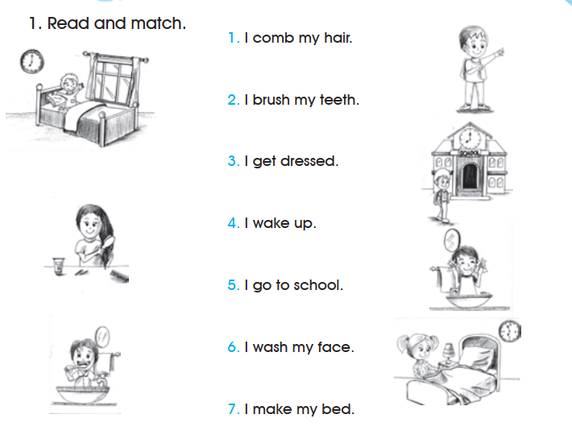
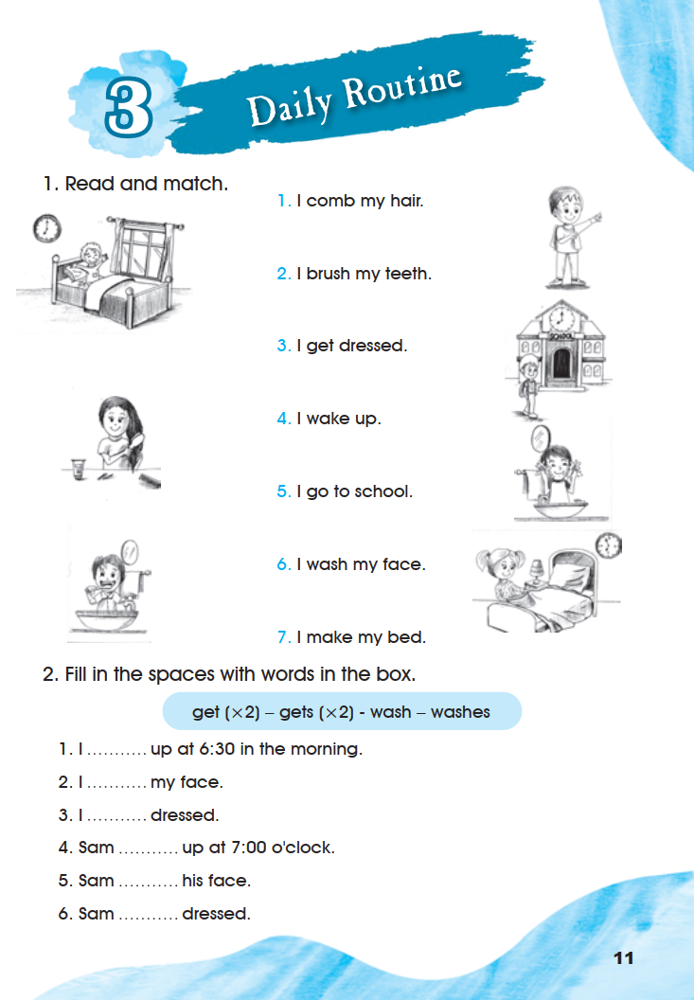
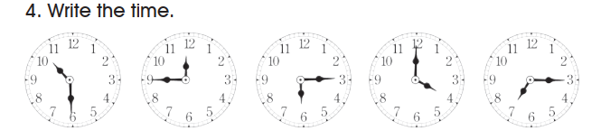
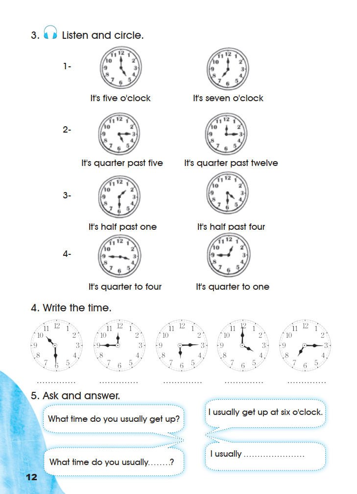
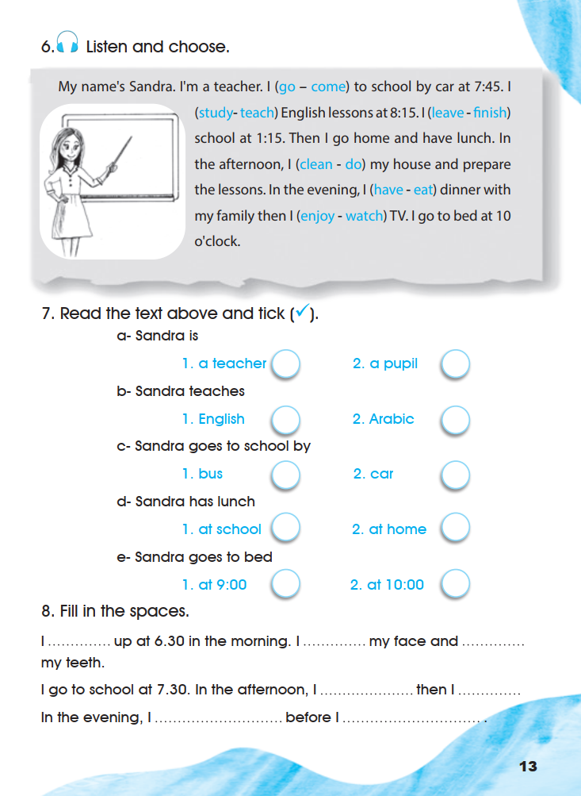

Workbook
Daily Routine · pages 11–13
Exercises 1–8 appear in their printed order. Listening tasks remain unscored because their recordings were not supplied.
1. Read and match.

2. Fill in the spaces with words in the box.
get (×2) – gets (×2) – wash – washes
Open the original source · Workbook · p. 11
Upload 4, preserved unchanged. SHA-256 and source mapping are recorded in the source manifest.

3. Listen and circle.
4. Write the time.

5. Ask and answer.
What time do you usually get up?
I usually get up at six o’clock.
The second question and answer contain open dotted lines. The first question and model answer are printed as shown; the activity is speaking practice.
Open the original source · Workbook · p. 12
Upload 5, preserved unchanged. SHA-256 and source mapping are recorded in the source manifest.

6. Listen and choose.
7. Read the text above and tick (✓).
This reading task refers to the printed paragraph in exercise 6; that paragraph is visible on this page. It does not supply or stand in for the missing recording.
Open the original source · Workbook · p. 13
Upload 6, preserved unchanged. SHA-256 and source mapping are recorded in the source manifest.

8. Fill in the spaces.
Personal writing. The book supplies no word bank or single answer for this routine.
Practice answers are saved in this browser only.